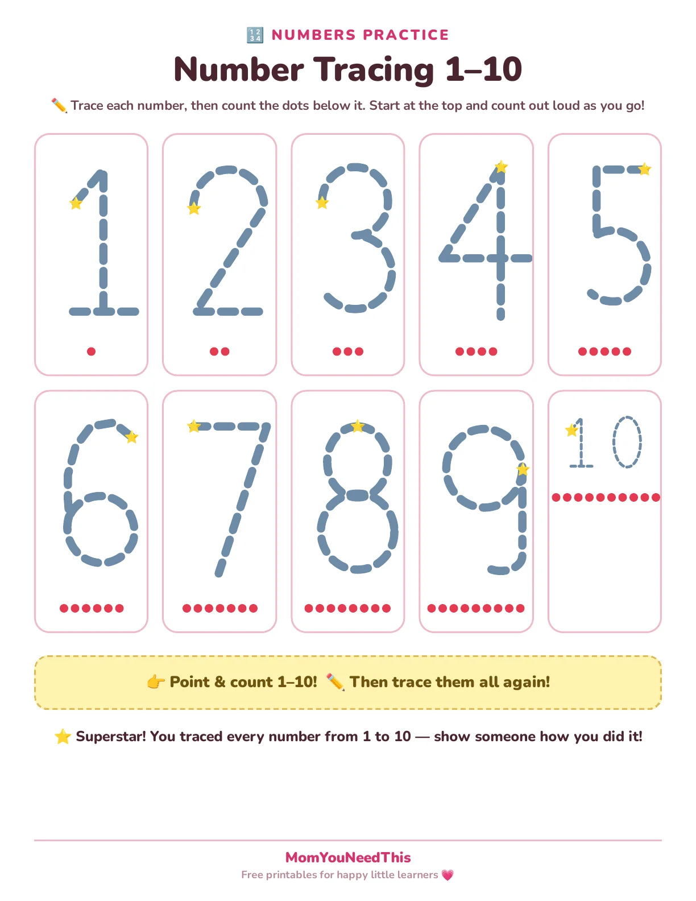

Number Tracing Worksheets Fun Number Activities For Toddlers & Preschoolers
This free printable number tracing pages gives toddlers and preschoolers a fun, no-prep way to build pre-writing and pencil-control skills. Kids trace each line to build confidence and control.
Last updated:
Quick Answer
Little hands learn to write numbers here: these number tracing pages give toddlers and preschoolers guided lines for every number from 1 to 10. Pick a single number page to practice, or print the free 1 to 10 tracing printable on this page. Builds number formation and pencil control — no signup.
At a Glance
- Ages: Toddlers and preschoolers
- Activity: Tracing numbers on guided lines
- Skills: Number formation and pencil control
- Format: Printable worksheets (PDF)
- Cost: Free, no signup
🔢 How To Use This Printable
- Download and print the tracing page — cardstock holds up best for little hands. The print button opens the full-size page in a new tab if you prefer to print from there.
- Trace the first line together, showing your child where to start and which way to go.
- Let them trace on their own with a pencil, crayon, or washable marker.
- Celebrate and repeat — print fresh copies anytime for extra practice.
⭐ Learn Numbers Through Tracing
Choose a number worksheet and help your child practice pencil control, number recognition, and counting skills with fun printable activities.
Explore Number Tracing Activities
Number 1 Tracing
Practice tracing and recognizing number 1.
2Number 2 Tracing
Practice tracing and writing the number 2.
3Number 3 Tracing
Practice tracing and writing the number 3.
4Number 4 Tracing
Practice tracing and writing the number 4.
5Number 5 Tracing
Practice tracing and writing the number 5.
6Number 6 Tracing
Practice tracing and writing the number 6.
7Number 7 Tracing
Practice tracing and writing the number 7.
8Number 8 Tracing
Practice tracing and writing the number 8.
9Number 9 Tracing
Practice tracing and writing the number 9.
10Number 10 Tracing
Practice tracing and writing the number 10.
What Kids Practice
Number tracing activities help children develop pencil control, fine motor skills, number recognition, counting abilities, and early math confidence.
More Free Preschool Resources
Find toddler and preschool activities designed to make learning fun at home.
📚 Explore Free Resources
🖨️ Download Your Free Number Tracing 1-10 Printable
Trace big dashed numbers 1 through 10, then count the dots under each one. Print it out, grab the crayons, and you're ready — no signup needed.
⬇️ Download Free Printable 🖨️ Print🎁 Free printable for toddlers & preschoolers
📚 Keep Building Early Math Skills
Explore more free preschool resources including alphabet worksheets, coloring pages, learning activities, and printable games.
🎁 View Free Learning Resources❓ Number Tracing Pages FAQ
Is this number tracing pages printable really free?
Yes — this number tracing pages printable is 100% free to download and print at home. No signup and no payment needed. Just tap the download button and print as many copies as you like.
What ages is this printable best for?
It is made for toddlers and preschoolers. Little ones can enjoy it with a grown-up’s help, while older preschoolers can work on it more independently.
What should my child trace with?
A pencil, crayon, or washable marker all work. For extra practice, slip the page into a dry-erase pocket and use a dry-erase marker.
Are these number tracing worksheets good for preschoolers?
Yes — each number from 1 to 10 gets big, clear tracing guides, sized for toddlers and preschoolers who are just learning to form numbers.
How do I get the number tracing printables?
Tap the download button on this page to save the 1–10 printable, then print it at home as many times as you like.
Which number should my child learn to write first?
Start with 1 — it is a single straight line down, the easiest first win there is. Then 2 and 3, whose curves build on each other. After that, follow your child's interest rather than the order: the number of their age, or of your house, is the one they will practise most happily.
What if my child writes numbers backwards?
Reversals are completely normal at this age — most children flip a 3, a 5 or a 7 sometimes until they are six or seven. Tracing helps because every number here starts at the same dot: practise the starting point and the direction, not perfection, and the flips fade on their own.
🔗 More Free Printables You’ll Love
- Free Alphabet Coloring Pages Free printable alphabet coloring pages for little learners.
- Free Line Tracing Practice Pages Free printable line tracing practice pages for little learners.
- Free Lowercase Letter Tracing Free printable lowercase letter tracing for little learners.
- Free Number Coloring Pages Free printable number coloring pages for little learners.